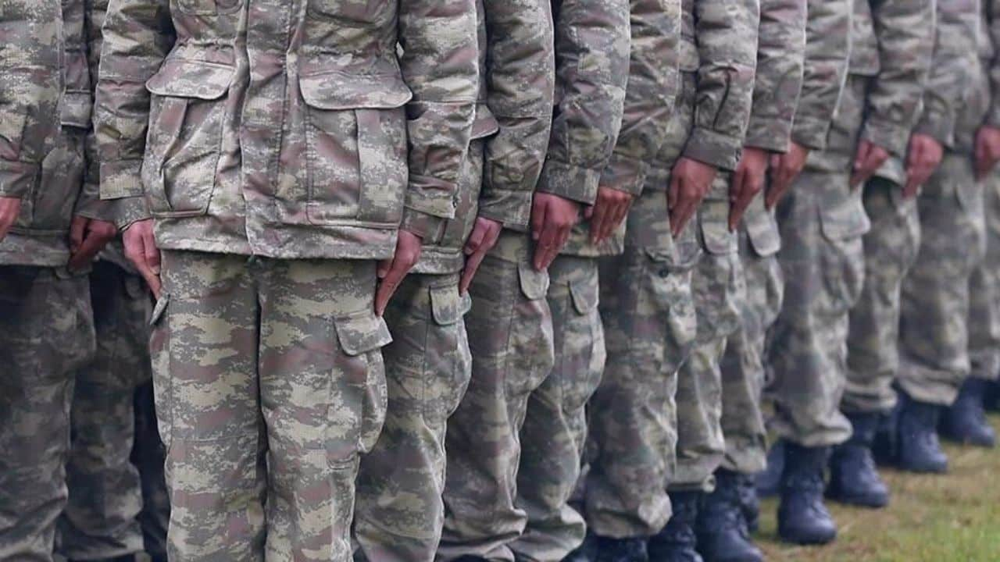

Amasya 15. Piyade Eğitim Tugayı: Asker Aileleri İçin Rehber
Oğlunuz, eşiniz veya yakınınız Amasya'da askerlik yapacaksa, yemin töreni ve ziyaretler için konaklama rehberiniz burada.
Tugay Nerede?
15. Piyade Eğitim Tugay Komutanlığı, Amasya şehir merkezine oldukça yakın bir konumdadır. Ulaşım taksi veya toplu taşıma ile kolaylıkla sağlanabilir.
En Yakın ve Rahat Otel
Aks Royal Otel olarak, Tugay Komutanlığı'na sadece 3 KM mesafedeyiz. Yemin töreni için gelen ailelere özel konforlu, geniş ve temiz odalarımızla hizmet veriyoruz.
Amasya Hakkında Sıkça Sorulanlar
-
Amasya'ya nasıl gidilir?
Amasya'ya karayolu ile ulaşım en yaygın yöntemdir. Ankara'dan yaklaşık 5 saat, İstanbul'dan 8 saat mesafededir. Havayolu ile Samsun Çarşamba Havalimanı'na inip oradan 1.5 saatlik bir yolculukla Amasya'ya ulaşabilirsiniz.
-
Amasya'da nerede kalınır?
Şehir merkezinde, Yalıboyu Evleri ve tarihi mekanlara yürüme mesafesinde konaklamak en idealidir. Aks Royal Otel, şehir merkezinde konumlanmış, modern konforlu odalarıyla hizmet vermektedir.
-
Amasya'nın en ünlü yeri neresidir?
Kral Kaya Mezarları ve Yalıboyu Evleri Amasya'nın en ünlü simgeleridir. Ayrıca Ferhat ile Şirin Müzesi, Amasya Kalesi ve Şehzadeler Müzesi de mutlaka görülmesi gereken yerler arasındadır.
-
Amasya'da ne yenir?
Amasya Çöreği, Keşkek, Baklalı Dolma ve Bamya Çorbası şehrin en meşhur lezzetleridir. Ayrıca meşhur Amasya Misket Elması'nı da tatmayı unutmayın.
-
Amasya'ya ne zaman gidilir?
Nisan-Mayıs ve Eylül-Ekim ayları Amasya'yı gezmek için en ideal zamanlardır. Hava ne çok sıcak ne de çok soğuktur. Kışın kar yağdığında da şehir büyüleyici bir görünüme bürünür.
-
Amasya'da kaç gün kalınmalı?
Amasya'yı rahatça gezmek için en az 2 gün ayırmanızı öneririz. Tarihi yerleri, müzeleri ve doğal güzellikleri keşfetmek için bu süre yeterlidir.